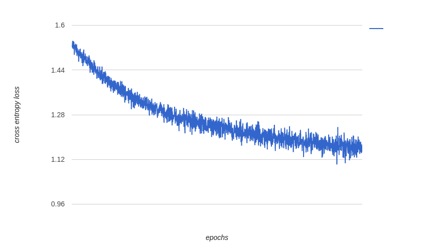
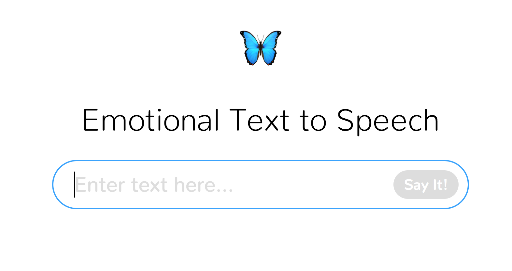

Strawman II
We present an improved baseline approach for our task of emotional text-to-speech generation, and provide comparisons with our initial baseline.
Data Collection
Since the first strawman, we have:
- Removed the ambiguous 🙂 emoji from our emotion-emoji mappings. The alternative of detecting sarcastic tweets is itself an area of ongoing research and well beyond the scope of our project.
- Diversified the range of emotion labels. In addition to joy and anger, we now also tag tweets as neutral, sad, and surprised.
- Expanded our corpus. Our full dataset now includes just under ten thousand tweets, divided roughly evenly between five emotions.
Error Analysis
Error analysis for the data collection pipeline involves comparing the assigned labels with our own judgment. We examined ten tweets for each label:
| Assigned Label | Agree / Disagree |
|---|---|
| Neutral | 0 / 10 |
| Joy | 6 / 4 |
| Sadness | 8 / 2 |
| Anger | 10 / 0 |
| Surprise | 5 / 5 |
With the trailing-emoji tagging method, angry tweets are tagged by far the most accurately, and sad tweets are also tagged reasonably well. Beyond that, however, there is considerable ambiguity and overlap in how emojis are used. The "neutral" emojis, in particular, are actually more often used in disappointed contexts:
I won't be satisfied with my face until I get a nose job 😐
— إيزيس 🌸✨ (@iizizzzz) April 24, 2017
We will continue to make improvements to our data pipeline, including the possible addition of further sources.
Multi-Class Classification
On this front, we have concentrated on adding an LSTM model to our pipeline, training it, and attempting to optimize its performance. We also present a refined evaluation of our first strawman model, the unigram classifier.
Unigram classifier
We tuned the UNK-threshold hyperparameter by a brute-force search in the range of 1 to 50. The dev accuracy was best with an UNK-threshold of 7 and corresponding vocabulary size of 1070 tokens. Here is a summary of its performance:
| Training | Test (dev) | |
|---|---|---|
| Overall accuracy | 0.6776 | 0.3513 |
| Mfc accuracy | 0.2180 | 0.1918 |
Test data metrics:
| Label 0 (NEUTRAL) | Label 1 (JOY) | Label 2 (SADNESS) | Label 3 (ANGER) | Label 4 (DISGUST) | Label 5 (SURPRISE) | |
|---|---|---|---|---|---|---|
| Precision | 0.3333 | 0.4057 | 0.3084 | 0.3922 | No data | 0.2881 |
| Recall | 0.2804 | 0.4574 | 0.3708 | 0.3960 | No data | 0.2329 |
| F1 | 0.3046 | 0.4300 | 0.3367 | 0.3941 | No data | 0.2576 |
LSTM classifier
As a second, more advanced baseline model, we implemented a character-level LSTM in TensorFlow. The input to the model is the full text of a tweet encoded as a sequence one-hot vectors. The LSTM's hidden state size is 64. The output from the final time step of the LSTM is projected into 6 dimensions (the number of labels) with a standard dense layer, and then run through a softmax to obtain a probability distribution.
After training for about 8 hours, the model as described achieved a stunning 99.99% accuracy on the training set and 26.24% dev accuracy, suggesting egregious and unabashed overfitting. So, we re-trained the network with 50% dropout applied to the LSTM cell inputs and outputs. This resulted substantially improved performance, which is what we report below.
| Training | Test (dev) | |
|---|---|---|
| Overall accuracy | 0.6972 | 0.6940 |
| Mfc accuracy | 0.2180 | 0.1918 |
Test data metrics:
| Label 0 (NEUTRAL) | Label 1 (JOY) | Label 2 (SADNESS) | Label 3 (ANGER) | Label 4 (DISGUST) | Label 5 (SURPRISE) | |
|---|---|---|---|---|---|---|
| Precision | 0.7170 | 0.7021 | 0.5612 | 0.7429 | No data | 0.7705 |
| Recall | 0.7103 | 0.7021 | 0.6180 | 0.7723 | No data | 0.6438 |
| F1 | 0.7136 | 0.7021 | 0.5882 | 0.7573 | No data | 0.7015 |
Also, here is a graph of the LSTM's mean cross-entropy loss over about 100,000 epochs of training. (The loss reported is the average loss during the final 10 steps of the epoch).
Plans for future models
When more training data are collected, we will explore a word-level LSTM with a trained word embedding layer. We will also try using an emotional lexicon presented by Saif Mohammad.
Text to Speech
We have made the following improvements to TTS since the previous baseline:
- Multi-Class Pitch Envelopes: Additional pitch envelopes for the newly-supported classes.
- Integration with Classifier:
text_to_speech.pynow provides a RESL (Read-Emote-Say-Loop) to quickly classify+speak text. - Integration with Front-End: We've set up a local Flask server with a web front-end to enable TTS from an attractive web interface (available on our repo): 
In addition, we've begun work on a more advanced speech processing pipeline using style-transfer from emotive voices. Initial experiments with a patch-based system have yielded poor results, so we intend to transition to a neural-network based post-processor for future iterations.
The code for our baseline implementations is available on GitHub.